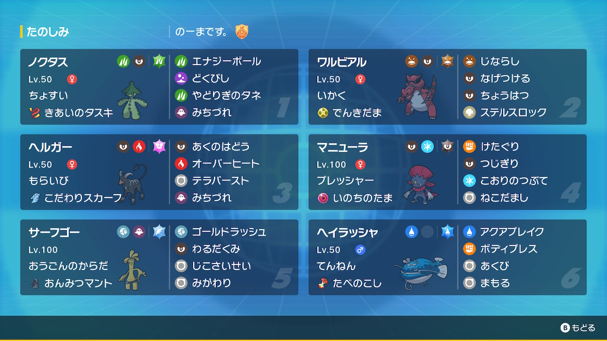

動画
パーティ画像

努力値
ノクタス @ きあいのタスキ
ちょすい / おくびょう
145-121-81(4)-167(252)-80-117(252)
ワルビアル @ でんきだま
いかく / わんぱく
201(244)-138(4)-128(132)-x-104(108)-115(20)
ヘルガー @ こだわりスカーフ
もらいび / ひかえめ
151(4)-99-73(20)-178(252)-102(12)-143(220)
マニューラ @ いのちのたま
プレッシャー / いじっぱり
146(4)-189(252)-85-x-105-177(252)
サーフゴー @ おんみつマント
おうごんのからだ / ひかえめ
163(4)-x-142(212)-174(44)-112(4)-135(244)
ヘイラッシャ @ たべのこし
てんねん / わんぱく
257(252)-120-183(252)-x-85-56(4)
ちょすい / おくびょう
145-121-81(4)-167(252)-80-117(252)
ワルビアル @ でんきだま
いかく / わんぱく
201(244)-138(4)-128(132)-x-104(108)-115(20)
ヘルガー @ こだわりスカーフ
もらいび / ひかえめ
151(4)-99-73(20)-178(252)-102(12)-143(220)
マニューラ @ いのちのたま
プレッシャー / いじっぱり
146(4)-189(252)-85-x-105-177(252)
サーフゴー @ おんみつマント
おうごんのからだ / ひかえめ
163(4)-x-142(212)-174(44)-112(4)-135(244)
ヘイラッシャ @ たべのこし
てんねん / わんぱく
257(252)-120-183(252)-x-85-56(4)